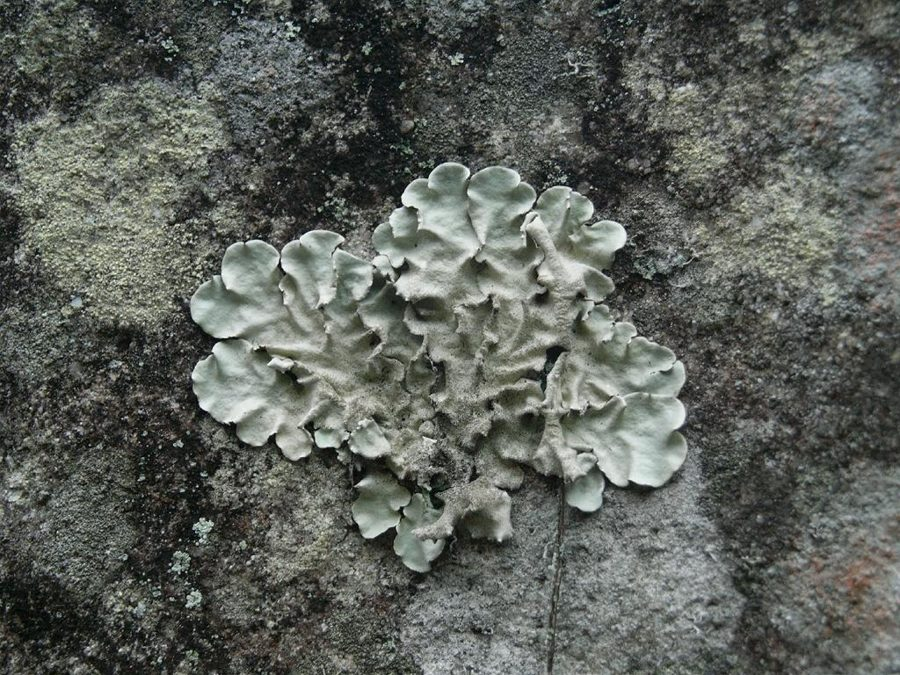

पत्थर फूलStone-flower Lichen
Parmotrema tinctorum · Parmeliaceae · FNG-0019

- Scientific name
- Parmotrema tinctorum (Despr. ex Nyl.) Hale
- Family
- Parmeliaceae
- Hindi
- पत्थर फूल
- Local names
- chharila, charila, patthar phool, patthar ke phool, pathar phool
- Status here
- native
- Movement
- Resident, here all year
- IUCN
- not evaluated
- Review
- audited and independently read
When to look कब देखें
Present all year.
पत्थर फूल / Stone-flower Lichen
Parmotrema tinctorum (Despr. ex Nyl.) Hale — Parmeliaceae
पत्थर फूल (चछरीला) — एक अनोखा जीव जो न पौधा है, न पशु, बल्कि एक कवक और शैवाल का मिला-जुला सहयोग है। पत्थर पर, पुरानी दीवारों पर, और आम के पेड़ों की छाल पर, लोबदार, पीले-भूरे, कभी-कभी हरे रंग के "फूल" जैसे ढाँचे दिखते हैं। इसी को "पत्थर फूल" या "चछरीला" कहते हैं। बाज़ारों में मसाले के रूप में, ख़ास कर गरम मसाले में, यह एक महत्वपूर्ण और महँगा मसाला है। सूखाकर पीस लेने के बाद, यह मजेदार, थोड़ा कड़वा स्वाद देता है। गाँवों में, औषधि और रंग के रूप में भी इस्तेमाल होता है।
Quick Identification त्वरित पहचान
| Feature | Description |
|---|---|
| Thallus shape | Foliose (leaf-like); lobed; loosely attached at base; 5–15 cm across |
| Thallus colour | Grey-green to pale yellow-brown when dry; bright green when wet (after rain) |
| Lobe structure | Round to irregular lobes, 5–15 mm wide; lobes overlapping; slightly curved upward |
| Upper surface | Smooth to slightly wrinkled; may bear soredia (powdery white spots) on lobe tips or edges |
| Undersurface | Tan to dark brown; rhizines (root-like structures) present for attachment; no isidia (branched structures) typically present |
| Habitat location | On mango tree bark, rock faces, old walls, boulders; always in open, well-lit areas; rare in shaded forest floor |
| Associated substrate | Often on weathered, lichens-friendly bark (mango, neem, sal); less common on smooth, young bark |
| Frost/winter appearance | Dull grey, crispy-dry in winter; does not appear dead, just dormant |
| Smell | Faint earthy smell when moist; no distinctive odour when dry |
Field tip: Look on the sun-exposed side of old mango trees, on compound walls, or on boulder surfaces. You will see a foliose, lobed, pale yellow-grey lichen with rounded lobes that looks somewhat like a dried leaf or flower. This is chharila. It is always present on the same tree year after year; it does not fall off or move. Compare with fresh, green leaves — this lichen is rigid and does not have a stem or veins.
हिंदी — कैसे पहचानें: पत्थर या पेड़ की छाल पर, लोबदार, पीले-भूरे रंग की, कठोर (पत्ती नहीं) संरचना। पत्तियों की तरह होती है पर वह नहीं है। सूखी होने पर भूरी, बारिश के बाद हरी हो जाती है। स्पर्श करो तो नरम नहीं, कठोर है।
Morphology आकारिकी
Lichen anatomy (visible structure):
| Component | Description |
|---|---|
| Thallus (body) | Foliose (leaf-shaped); 5–15 cm across; lobed margins |
| Lobes | Irregular, overlapping, 5–15 mm wide; slightly undulate (wavy) |
| Upper cortex | Protective outer layer of fungal cells; smooth, greyish |
| Medulla | Middle layer; white or pale; contains the algal layer and fungal hyphae |
| Lower cortex | Dark brown to black; protective layer on underside |
| Soredia | Powdery white structures (clusters of algae + fungus) on lobe margins and tips; dispersal organs |
| Rhizines | Black, branched, hair-like structures on underside; anchor the lichen to the substrate |
| Apothecia | Fruiting bodies (rare in Parmotrema tinctorum); disc-shaped, brown or rust-coloured; found on upper surface if present |
Symbiotic partners:
- Fungal partner (Ascomycete): Forms the overall structure, produces medullary compounds, and provides support. The fungus cannot survive alone; without the alga, it would die.
- Algal partner (Chlorococcoid alga, genus Trebouxia): Green, photosynthetic cells embedded in the medulla. Produces sugars via photosynthesis, which the fungus consumes. The alga cannot survive exposed to full sun without the fungal protection.
Secondary compounds: Parmotrema tinctorum contains lichen secondary metabolites (atranorin, usnic acid, other phenolics) that give it antibacterial and antifungal properties. These compounds also contribute to its smell and taste, and are responsible for some of its uses.
हिंदी: यह दो जीवों की दोस्ती है — कवक और शैवाल। कवक बनावट देता है, शैवाल खाना बनाता है। अकेले ये दोनों जी नहीं सकते।
Life Cycle and Ecology जीवन चक्र और पारिस्थितिकी
Symbiotic reproduction and growth:
Parmotrema tinctorum reproduces primarily asexually (vegetatively) through:
- Soredia (powdery dispersal organs):
- Located on lobe margins and tips
- Contain both fungal cells and algal cells
- Dispersed by wind; land on suitable substrate (bark, rock)
- Develop directly into new lichen thallus
- Thallus fragmentation:
- Old lobes break off and scatter
- Can regenerate into new lichen if they land on suitable substrate
- Sexual reproduction (rare):
- Apothecia (fruiting bodies) occasionally form
- Produce ascospores that require re-symbiosis with a suitable alga to develop into a new lichen
- Most apothecia do not lead to viable new lichens (alga is usually not present at dispersal site)
Growth rate: Extremely slow. Parmotrema tinctorum grows at approximately 1–2 mm per year. A lichen 10 cm across may be 50+ years old.
Longevity: Lichens are among the longest-lived organisms. Parmotrema thalli can persist for centuries on the same tree or rock, provided the substrate remains suitable.
Seasonality:
- Dry season (November–May): Lichen is desiccated (dry); appears brittle and grey-brown; photosynthesis minimal
- Monsoon and post-monsoon (June–October): Rains rehydrate the lichen; turns bright green; photosynthesis active
- No true dormancy: Lichen can rehydrate and resume activity within hours of wetting
Habitat requirements:
- Light: Requires good, direct light; absent from shaded forest floors or dark enclosed spaces
- Moisture: Tolerant of drying; can survive months without water
- Air quality: Indicator of low air pollution; absent in heavily polluted areas (dies from air pollutants)
- Substrate: Prefers mature tree bark (mango, neem, sal) and exposed rock; less common on smooth, young bark or concrete
हिंदी: बहुत धीरे बढ़ता है, 50 साल में 10 सेंटीमीटर। गहरी पुरानी छाल और पत्थर को पसंद। प्रदूषण से मर जाता है।
Ecology and Distribution पारिस्थितिकी और वितरण
Ecological role:
- Rock weathering pioneer: Among the first colonizers of bare rock. Fungal acids slowly dissolve rock minerals, beginning soil formation.
- Bioaccumulator: Absorbs airborne mineral dust and heavy metals. Used in pollution monitoring ("lichen biomonitoring").
- Food source: Insects and small animals graze on lichens (rare, but some mites and microarthropods depend on lichen thalli).
- Indicator of ecosystem health: High lichen diversity indicates low air pollution and good ecosystem quality.
Substrate specificity:
- Preferred: Mango (Mangifera indica), neem (Azadirachta indica), sal (Shorea robusta), and other mature, rough-barked trees
- Also found on: Old stone walls, exposed boulders, weathered concrete structures, rock outcrops
- Rare on: Young, smooth bark; freshly painted walls; heavily shaded areas
Traditional and Commercial Use परंपरागत और व्यावहारिक उपयोग
Spice and culinary use (documented):
- Common name: Chharila, patthar phool, patthar ke phool (literally "stone flower")
- Preparation: Lichen is collected from trees and rocks, dried in the sun, and ground into a fine powder or kept as coarse fragments
- Taste and aroma: Distinctive, slightly bitter, earthy flavour; subtle aroma reminiscent of incense or dry plant material
- Traditional use in garam masala: A component of premium garam masala blends in North India, particularly in Uttar Pradesh and neighbouring regions. Also used alone as a spice and flavouring agent.
- Medicinal use (traditional, not verified): Mentioned in older Ayurvedic texts as a digestive aid and in traditional throat lozenges. Modern scientific verification of these claims is lacking.
Historical documentation:
- Mentioned in 18th–19th century botanical records of India as a trade item and spice component
- Recorded in traditional herbal pharmacopoeias (e.g., older versions of Ayurvedic texts, though not in modern standardised systems like the Pharmacopoeia of India)
Contemporary market:
- Collected and sold in bazaars, particularly in UP, Bihar, and neighbouring states
- Vendors in spice markets (e.g., Aminabad, Lucknow; older spice shops in Basti district) stock it under the name "chharila" or "stone flower"
- Increasingly marketed as a "superfood" or "health supplement" without strong scientific evidence
Caution on use claims:
Traditional use is documented and real; modern claims of medicinal efficacy (beyond historical use) are not validated by rigorous scientific studies. The lichen is safely consumed in small quantities as a spice; larger medicinal doses have not been systematically studied for safety.
हिंदी: यह मसाला है, स्वाद और खुशबू के लिए इस्तेमाल होता है। गरम मसाले में जाता है। पर औषधि के रूप में इसके फायदे पूरी तरह सिद्ध नहीं हुए। परंपरा में है, पर आधुनिक विज्ञान में पूरी तरह नहीं।
Expected Locally स्थानीय रूप से अपेक्षित
Not a field record. Written from published accounts for eastern Uttar Pradesh. No confirmed local sighting yet — if you have seen it, that is what the atlas needs.
अभी तक स्थानीय पुष्टि नहीं। यह विवरण प्रकाशित स्रोतों से है, किसी अवलोकन से नहीं।
Parmotrema tinctorum is expected on old, mature mango trees throughout Basti and Ayodhya districts, particularly on the sun-exposed sides of trees in villages, temple compounds, and along old roads where trees have been protected for decades. It is also found on exposed rock faces and old mortared stone structures (forts, old village walls, water tanks) in areas with low air pollution. The lichen is visible year-round but most conspicuous after the monsoon (September–October) when the green colour is brightest. It is collected by villagers who know its value; collection is unsustainable if excessive, as the slow growth rate means recovery takes decades. It is sold to spice merchants in local markets and urban centres.
Distribution वितरण
Global range: Native to tropical and subtropical Asia, particularly the Indian subcontinent. Also found in parts of Africa and Southeast Asia. Cosmopolitan in warm regions with suitable substrates.
In India: Widely distributed across tropical India. Particularly abundant in regions with mature tree cover and low air pollution: Western Ghats, Nilgiris, sal forests of central India, and the Gangetic plain where old trees are preserved.
In Uttar Pradesh: Found throughout eastern and central UP where old, mature tree populations exist. Less common in urban and heavily polluted areas; absent from intensively farmed regions with young orchard plantations.
In Basti district / eastern UP: Common on old mango, neem, and sal trees; also on exposed rock outcrops and old stone structures. Abundance decreases in areas with significant air pollution or where old trees have been cleared.
Research Questions शोध प्रश्न
- How many old mango trees in your village have chharila (stone-flower lichen), and on which sides of the tree? — Map every tree; note whether lichen is on sun-exposed (east/south-facing) or shaded sides.
- Can you collect chharila sustainably — i.e., without killing the tree or preventing lichen regrowth? — Test whether carefully scraping (not gouging) allows regrowth; observe for one year.
- Is chharila still being sold in your local spice market, and at what price? — Ask spice vendors; record name used ("chharila", "patthar phool", etc.) and current price.
- Do older people in your village remember traditional uses of chharila (spice, medicine, dye)? — Interview 5+ elders; record their knowledge.
- Does air pollution (proximity to roads, industry) reduce lichen abundance on trees? — Compare lichen coverage on trees in a quiet village vs. a nearby town with traffic.
Similar Species मिलती-जुलती प्रजातियाँ
| Species | How to tell apart | हिंदी |
|---|---|---|
| Parmelia sulcata (Hammered Shield Lichen) | Similar foliose form; typically smaller lobes; more delicate appearance; undersurface usually without rhizines; different substrate preference (rock, metal) | छोटी लोबें, पत्थर पर आम |
| Flavoparmelia caperata (Speckled Shield Lichen) | Yellow-green colour (vs. grey-green of Parmotrema); prominent isidia (branched structures) on upper surface; less common in UP | पीले-हरे रंग की; शाखें |
| Mold on tree bark (various fungi) | Black or green coating; no distinct lobes; slimy or powdery; rubs off easily; not rigid like lichen | काली फफूंद; पोंछ सकते हो |
Field rule: Pale yellow-grey, foliose, lobed, rigid, lichen on mango tree or stone that does not come off easily and persists year after year = stone-flower lichen (Parmotrema tinctorum).
Taxonomy & Classification वर्गीकरण
Original description. Parmotrema tinctorum was originally described by Marius Despreaux as Parmelia tinctorum and later clarified by William Nylander. It was reclassified to the genus Parmotrema by John Hale in 1974, based on morphological and chemical characteristics.
Subspecies. No subspecies are formally recognized.
Family and order placement. Order Lecanorales, family Parmeliaceae. The genus Parmotrema contains approximately 100 species worldwide, distributed mainly in tropical and subtropical regions. Parmotrema tinctorum is one of the most economically and culturally significant Parmeliaceae species in South Asia.
Phylogenetic notes. Molecular studies (DNA sequencing) confirm Parmotrema tinctorum as a distinct species within the Parmeliaceae. The fungal partner is an Ascomycete of the genus Xanthoparmelia or closely related; the algal partner is typically Trebouxia or Pseudotrebouxia, common algae in lichens of arid and semi-arid regions.
IUCN status rationale. Not evaluated. As a widespread, slow-growing species with no particular conservation concern at the global level, it has not been formally assessed. However, local populations may be threatened by over-collection for commercial use or habitat loss (tree felling, air pollution). Sustainable harvesting practices are recommended where it is collected commercially.
Photo Gallery फोटो गैलरी
Photos needed आवश्यक फोटो
- [ ] Lichen on old mango tree bark, showing full thallus and lobed structure (पूरी लाइकेन)
- [ ] Close-up of lobe details and colour (लोबों का विवरण)
- [ ] Lichen on old stone wall or rock face (पत्थर पर)
No photos yet — add field photos to media/species/stone_flower_lichen/ and run node scripts/sync_photos.js.
References संदर्भ
- Despreaux, M. & Nylander, W. (1850). Description of lichens. Mém. Acad. Sci. Paris. [original description]
- Hale, M.E. (1974). Lichen Handbook, 2nd ed. Smithsonian Institution, Washington, D.C.
- Culberson, C.F. & Kristinsson, H. (1970). A standardized method for the identification of lichen products. Journal of Chromatography 46: 85–93. [chemical analysis of secondary metabolites]
- Upreti, D.K. & Chatterjee, S. (2015). Lichens of India: A Comprehensive Literature. Indian Council of Medical Research, New Delhi.
- Singh, B. & Singh, K. (1999). Ethnobotany of lichens in Himachal Pradesh, India. Ethnobotany 11: 78–91.
- GBIF Occurrence Data — Parmotrema tinctorum, India (2026).
Source file: species/fungi/lichens/stone_flower_lichen.md